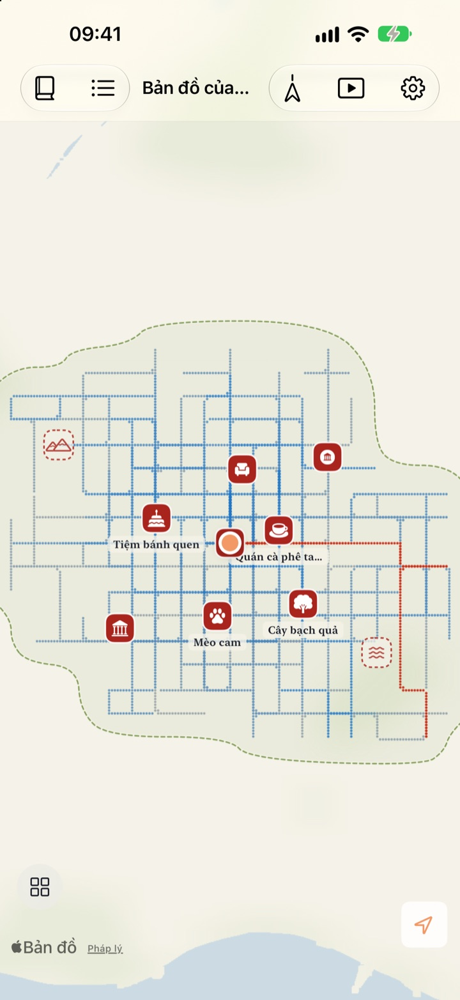
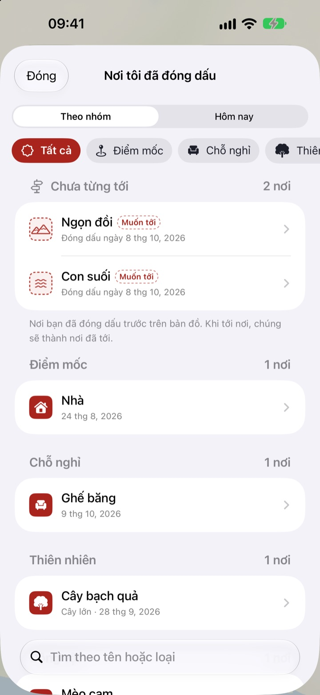
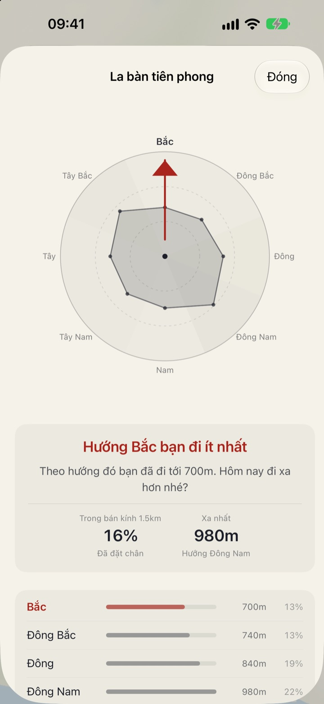
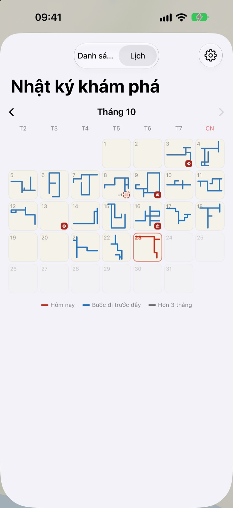

Bản đồ chỉ hiện ra
khi bạn đi bộ
Mọi thứ bắt đầu từ một tờ giấy trắng. Chỉ những nơi bạn đi bộ qua mới được lấp đầy, từng chấm một, và đi cùng một con phố trăm lần cũng không làm bản đồ rộng thêm. Muốn bản đồ lớn lên, hãy chọn một con đường mới.
Mọi tính năng đều miễn phí, không quảng cáo.

Thử đi một vòng
Kéo ngón tay hoặc chuột trên tờ giấy để đi. Chấm xanh là những con phố bạn đã đi trước đây. Hãy xem Đường vẽ hôm nay thay đổi thế nào khi bạn đi lại đường cũ so với khi rẽ sang hướng mới.
Ngày nào cũng đi những con phố cũ?
Ứng dụng đếm bước chỉ đếm số bước, chẳng bao giờ hỏi bạn đã đi đâu. Đi từ nhà ra ga rồi về là vòng đã đầy, còn con hẻm ngay bên cạnh thì nhiều năm vẫn là điều bí ẩn. Buktu Buktu chỉ tính những con đường bạn đi lần đầu, để hôm nay bạn có lý do đi vòng thêm một dãy phố.
Đóng dấu nơi đã tới và nơi muốn tới
Đóng dấu ngay chỗ bạn đứng, hoặc nhấn giữ bất kỳ đâu trên bản đồ. Có 212 con dấu để chọn, chia theo nhóm.
Con dấu đặt ở nơi bạn chưa từng đi sẽ là nơi muốn tới, rồi chuyển thành nơi đã tới khi bạn thật sự đến đó. Chụp biển hiệu cửa hàng, nền sẽ được cắt đi và biển hiệu dựng lên thành nhãn dán của chỗ đó.

Lần đi dạo tới: hướng bạn đi ít nhất
La bàn tiên phong chia khu vực quanh bạn thành tám hướng và chỉ ra hướng bạn đi ít nhất.
Dấu chân hôm nay xếp những nơi bạn dừng chân hôm nay theo thứ tự, kèm quãng đường đã đi giữa chúng.

Mỗi ngày để lại một hình dạng
Lịch vẽ hình dạng đường đi của mỗi ngày thay cho con số. Viết nhật ký hằng ngày bằng chữ và ảnh, và xem mỗi lần đi có bao nhiêu phần là đường mới.
Chọn một khoảng thời gian để xem bản đồ của bạn được vẽ ra thành video và xuất ra.

Bắt đầu trong ba bước
- 1
Mở ứng dụng
Một tờ giấy trắng mở ra.
- 2
Cho phép vị trí
Chọn “Luôn cho phép” và bật Chuyển động & thể chất để ghi lại các lần đi bộ mà không cần mở ứng dụng.
- 3
Ra ngoài
Con phố càng lạ, bản đồ càng rộng thêm.
Cách đọc bản đồ
- Chấm đỏ
- nơi bạn đi hôm nay
- Chấm chàm
- bước đi trước đây, chỗ đi qua càng nhiều càng đậm
- Chấm xám
- nơi hơn ba tháng chưa quay lại. Chúng phai đi nhưng không bao giờ biến mất
- Con dấu nét đứt
- nơi muốn tới. Khi bạn đến đó, nó thành nơi đã tới
- Đường tôi đã vẽ
- tổng chiều dài mọi con đường bạn đi lần đầu
- Đường vẽ hôm nay
- phần đường mới trong lần đi hôm nay
- Xem gộp
- trong Cài đặt, mở La bàn tiên phong, Dấu chân hôm nay và phim quá trình vẽ bản đồ
Chọn giữa bản đồ mực và Bản đồ tranh vẽ.
Mọi tính năng đều miễn phí
Miễn phí
- Bản đồ chỉ tô kín nơi bạn đi, có theo dõi đường mới
- 212 con dấu và nhãn dán biển hiệu cửa hàng
- La bàn tiên phong và Dấu chân hôm nay
- Lịch và nhật ký bằng chữ và ảnh
- Xuất video quá trình vẽ bản đồ
- Tiện ích trên Màn hình chính và Màn hình khóa
- Đồng bộ iCloud giữa các thiết bị
Ủng hộ nhà phát triển
- Gửi một chút tiền tip từ Cài đặt, nếu bạn muốn
- Tiền tip không mở khóa gì cả. Ứng dụng vẫn y như vậy
Không quảng cáo, không gói đăng ký.
Câu hỏi
Tôi đã đi bộ nhưng bản đồ không hiện gì.
Vào Cài đặt > Buktu Buktu > Vị trí, chọn Luôn luôn và bật Chuyển động & thể chất. Như vậy ứng dụng ghi được cả khi đã đóng. Nếu bạn chọn cách ghi tiết kiệm pin trong cài đặt của ứng dụng, hãy mở ứng dụng trước khi xuất phát. Vị trí có độ chính xác thấp vẫn được lưu nhưng không được vẽ.
Đi ô tô hay tàu điện ngầm có được ghi không?
Không. Ứng dụng dùng dữ liệu chuyển động và tốc độ để chỉ vẽ đi bộ và chạy, bỏ qua những đoạn trông như đi xe. Đôi khi có thể nhận nhầm.
Ngày nào tôi cũng đi cùng một tuyến mà bản đồ không rộng ra.
Đó là quy tắc. Mọi chỗ cách nơi bạn đã đi trong vòng 30 m đều tính là cùng một đường, nên chỉ đường đi lần đầu mới được cộng vào Đường tôi đã vẽ. Vỉa hè bên kia đường cũng tính là cùng một đường. La bàn tiên phong cho biết hướng bạn đi ít nhất.
Vị trí của tôi có bị gửi đi đâu không?
Không gửi cho nhà phát triển. Bước chân, con dấu, nhật ký và ảnh của bạn nằm trên thiết bị và trong iCloud riêng của bạn, nhà phát triển không xem được. Thống kê sử dụng ẩn danh không bao giờ chứa tọa độ, nội dung nhật ký, tên địa điểm hay ảnh. Dịch vụ Bản đồ của Apple được dùng để đổi tọa độ thành tên địa điểm. Xem chi tiết trong Chính sách quyền riêng tư bên dưới.
Dữ liệu có chuyển sang thiết bị mới không?
Có. Đăng nhập cùng Tài khoản Apple trên thiết bị mới và giữ iCloud bật, bước chân, con dấu, nhật ký và ảnh sẽ đi theo bạn.
Xóa con dấu hoặc ảnh thế nào?
Xóa con dấu trong danh sách Nơi tôi đã đóng dấu, còn ảnh trong nhật ký thì chạm và giữ để xóa. Cách xóa toàn bộ đường đi và nhật ký trong một lần đã nằm trong kế hoạch.
Thêm tiện ích thế nào?
Chạm và giữ Màn hình chính, chạm vào Sửa > Thêm tiện ích, rồi chọn Buktu Buktu. Với Màn hình khóa, chạm và giữ màn hình, rồi chạm vào Tùy chỉnh. Tiện ích trên Màn hình chính hiển thị hình dạng và độ dài đường hôm nay, còn Màn hình khóa hiển thị quãng đường hôm nay.
Tôi cần gì?
iPhone chạy iOS 17.0 trở lên.
Liên hệ bằng cách nào?
Gửi phản hồi từ phần cài đặt của ứng dụng hoặc gửi email đến địa chỉ bên dưới. Chúng tôi sẽ trả lời sớm nhất có thể.
Có câu hỏi hay góp ý? Hãy viết đến leeo@kakao.com.